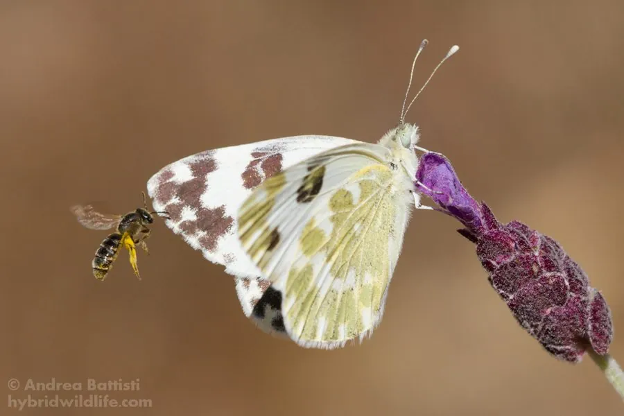

昆虫 · 动物界
云粉蝶 Pontia daplidice

翅面白色、后翅反面点缀绿色云状斑的粉蝶，广布于古北界，一年多代，幼虫取食十字花科野生植物。
- 分类
- 门节肢动物门纲昆虫纲目鳞翅目科粉蝶科属云粉蝶属
- 栖息环境
- 干燥的草坡、田埂、路旁和山地草甸
- 地理分布
- 古北界广布，自欧洲、北非经中亚至中国北方与日本
- 保护级别
- 尚无专门保护评估；为常见的野生粉蝶
物种志
云粉蝶的翅展约四至五厘米，翅面白色，前翅顶角有黑斑，黑斑在雄蝶中较小，雌蝶则更发达；后翅反面呈灰绿色，密布绿色的云状斑和白色脉络，停歇时像一片带霜的叶子。它的身体灰黑，被白色绒毛，触角呈棒状，末端灰白。春型个体体型较小、斑纹更淡，夏型则颜色更深，一年中不同世代的外形略有差别。
它广布于古北界，从欧洲、北非经中亚、西亚一直到中国北方和日本，在中国见于华北、西北、东北和西南山地，栖息在干燥的草坡、田埂、路旁和山地草甸，成虫飞行迅速，喜在十字花科野花上吸蜜。幼虫以播娘蒿、荠菜等十字花科植物为食，卵单产于寄主的叶片或花蕾上，幼虫取食叶片和花器，化蛹于茎秆或杂物间，一年可发生二至四代，以蛹越冬。它尚无专门保护评估，是常见的野生粉蝶。
形态与习性
- 翅展约四至五厘米，翅面白色
- 后翅反面灰绿色底上密布绿色云状斑
- 季节型春型小而淡，夏型色深
- 食性幼虫取食播娘蒿、荠菜等十字花科植物
- 发生世代一年二至四代，以蛹越冬
- 习性成虫飞行迅速，喜访十字花科野花
趣味知识
- 云粉蝶的后翅反面像一幅淡绿的水墨云图，停歇时很难被发现。
- 它一年能繁殖好几代，春型和夏型的外形并不完全一样。
- 幼虫把十字花科的野草当食堂，从叶片一直啃到花蕾。